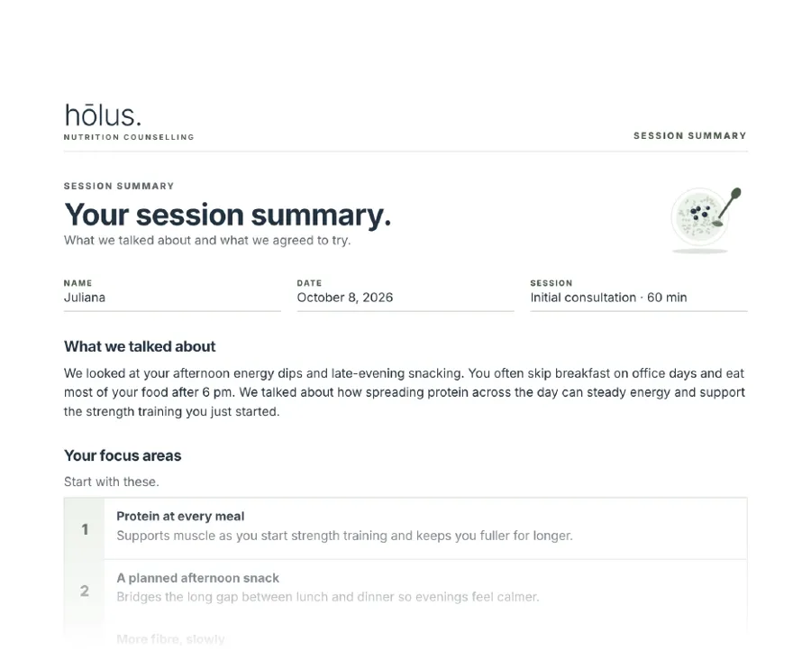

60 minutes
Nutrition & Health Behaviour Consultation
A comprehensive conversation about your nutrition, lifestyle, routines, goals and priorities. You’ll leave with clear areas of focus, personalized recommendations, practical next steps and relevant resources.
$145Book
What you get

SampleSession summary
- A summary of what we talked about
- Two or three things to focus on
- What to try and how to start
- Next steps and resources
Saved to your Jane account after the session. This is an example; yours is written after we meet.